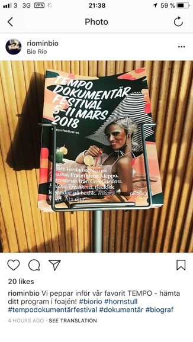
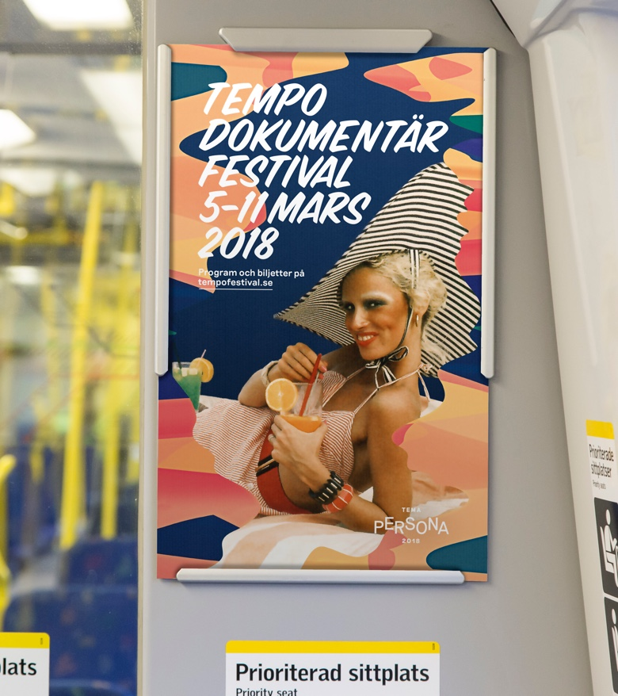
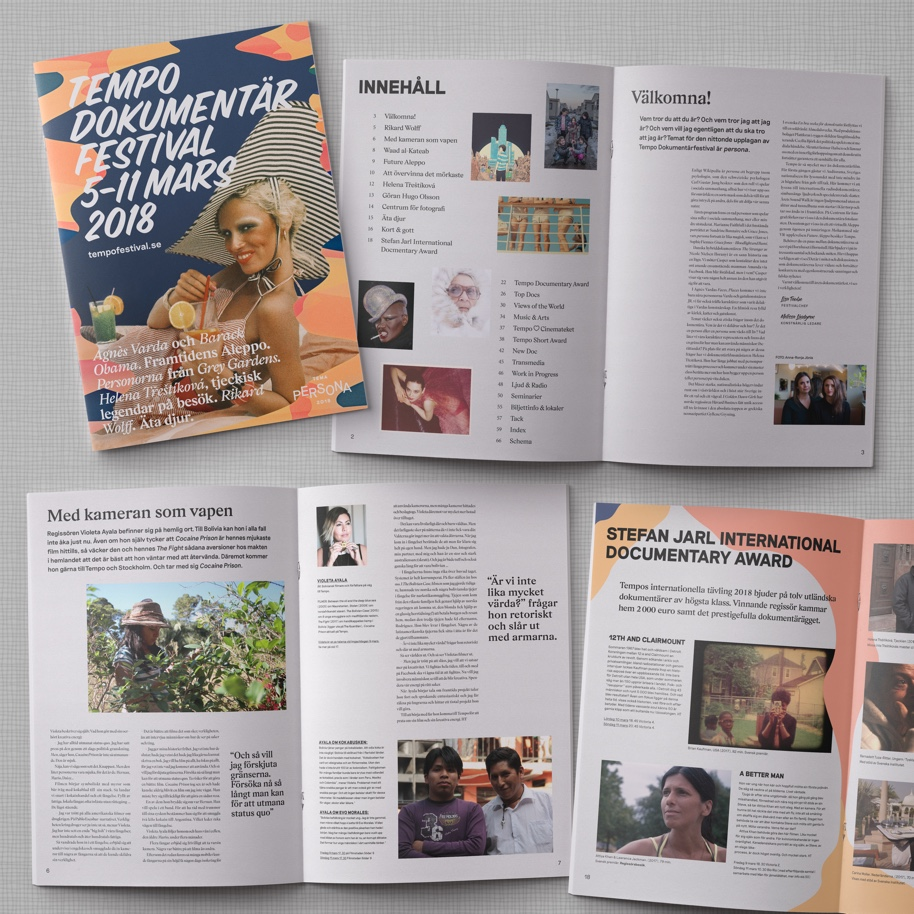
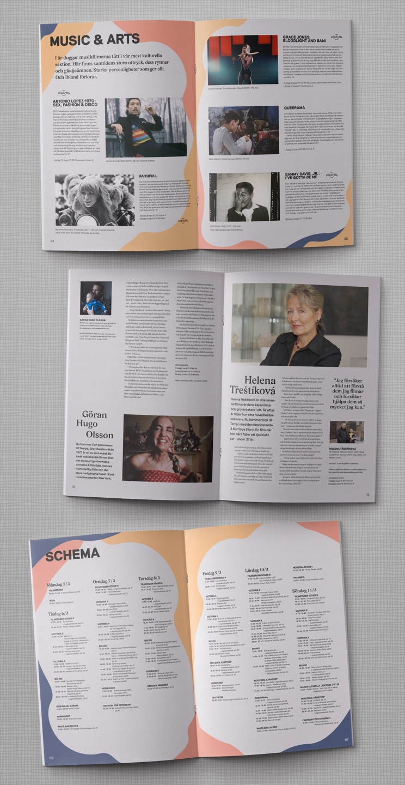
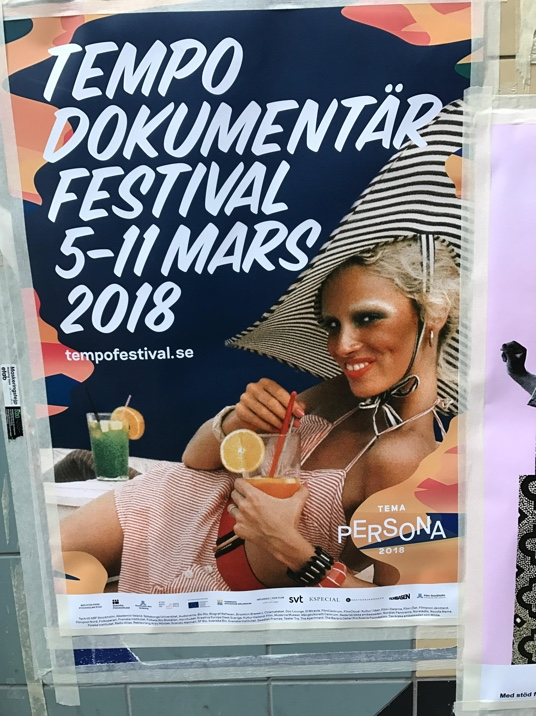
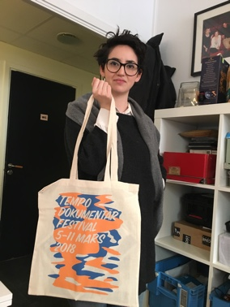
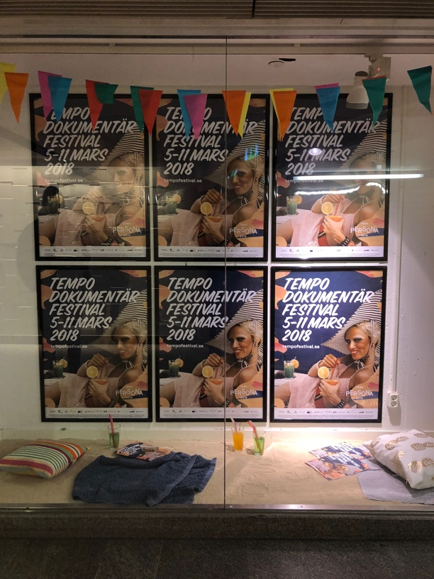
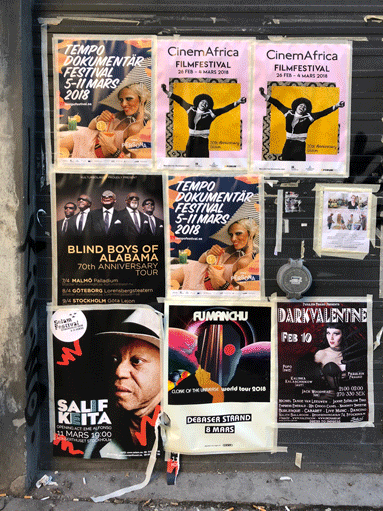

Persona
A trailer for the 2017 festival theme "Persona". Produced in collaboration with director Senay Berhe.
The City
We participated in the festival, in collaboration with director Senay Berhe with a short film called "the city".
We created a campaign site where we asked ppl from around the world to upload video clips of their everyday city lives to be used as material for the film. Accompanied by an unique written song by artist Jenny Wilson.